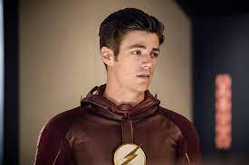

Thomas Grant Gustin (Norfolk, Virgínia, 14 de janeiro de 1990 (32 anos)
Ele éum cantor e dançarino americano, conhecido por interpretar o papel de Barry Allen/Flash em The Flash e Sebastian Smythe em Glee.
Durante seus anos escolares. Grant fez parte do Governor`s School for the arts (uma escola de artes regional) em Norfolk, estudando Teatro Musical. Em 2008, ele se formou no Granby High School e foi estudar no BFA Music Theatre Program na Elon University na Carolina do norte pordois anos.
Casou-se com Andrea La Thome em 15 de dezembro de 2018, com quem está junto desde janeiro de 2016
Página inicial